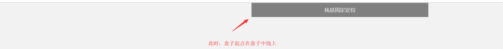

原文出处:本文由博客园博主致爱丽丝提供。
原文连接:https://www.cnblogs.com/hjk1124/p/11532725.html
原文连接:https://www.cnblogs.com/hjk1124/p/11532725.html
发现了一个之前未留意的知识点，做个笔记。
当一个块级元素的父元素开启了flex布局后，我们可以很轻松的将这个元素居中对齐，可以在父元素上加
justify-content: center;
align-items: center;/*单行下的居中对齐*/或
justify-content: center;
align-content: center;
flex-wrap: wrap;/*多行下的居中对齐*/
然而，这种对齐方式是基于父元素开启了flex布局方式，假设该子元素开启了固定定位后，这种对齐方式便会失效，因为固定定位脱离了文档流，不受父元素的影响，父元素内对子元素的定位方式自然就不起作用了，那么问题来了：能否将这个固定定位的盒子居中显示呢？
方法是人想出来的。
在这里，我们可以结合css3和百分比定位达到目的：
.search_box {
position: fixed;
top: 0;
left: 50%;
-webkit-transform: translateX(-50%);
transform: translateX(-50%);
width: 100%;
max-width: 540px;
min-width: 320px;
/* 固定定位，脱离文档流 */
height: 44px;
/* 通过与left配合，使这个div居中显示 */
}
第一步：定位在50%,此时盒子会在居中靠右位置，但盒子的起点位于屏幕居中位置， top: 0; left: 50%; //以屏幕为基准，定位使盒子移动屏幕的一半

第二步：使用transform：translateX(-50%)：将盒子水平向左位移到自身宽度的一半。//以自身为基准 ，通过transform使盒子移动自身宽度的一半

这样，就完成了水平居中显示.